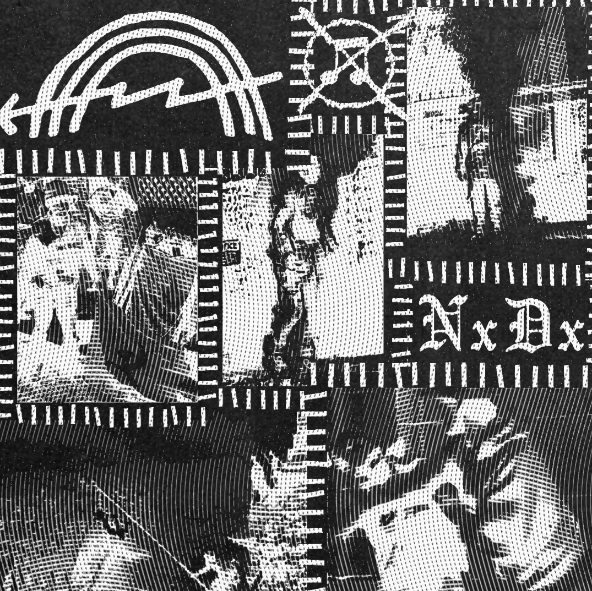
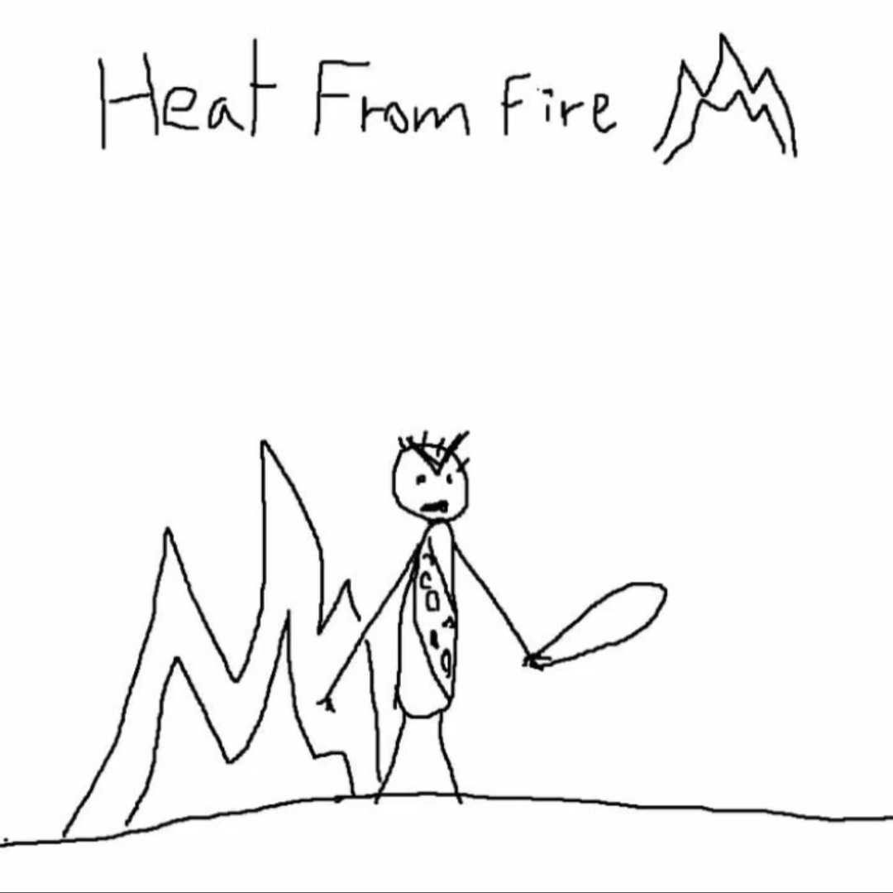
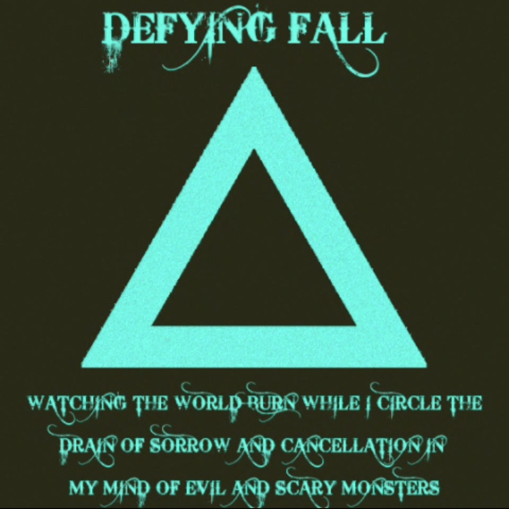

Artists

Necrotic Desires
Genres: Noisecore, Classic Rock, Grindcore
Necrotic Desires is a two-piece grindcore band from Northern Michigan, and the only band on the label that wasn't made as a joke.
Discography
Inactive Artists

Heat From Fire
Genres: Noisecore, Noise
Heat From Fire was a noisecore project founded on 9/11 and lasted one day.
Discography
- Banana / Heat From Fire (09/12/24)
- Heat From Fire (09/11/24)

Defying Fall
Genres: Metalcore
Defying Fall was a band made purely to make fun of Falling In Reverse and generic metalcore. The song titles whine about liberals and cancel culture, the guitar is almost purely palm muted 0's, the vocals are annoyingly high pitched, and you can't forget the pop cover to get an extra dollar.
Discography
- Watching The World Burn While I Circle The Drain Of Sorrow And Cancellation In My Mind Of Evil And Scary Monsters (06/24/24)